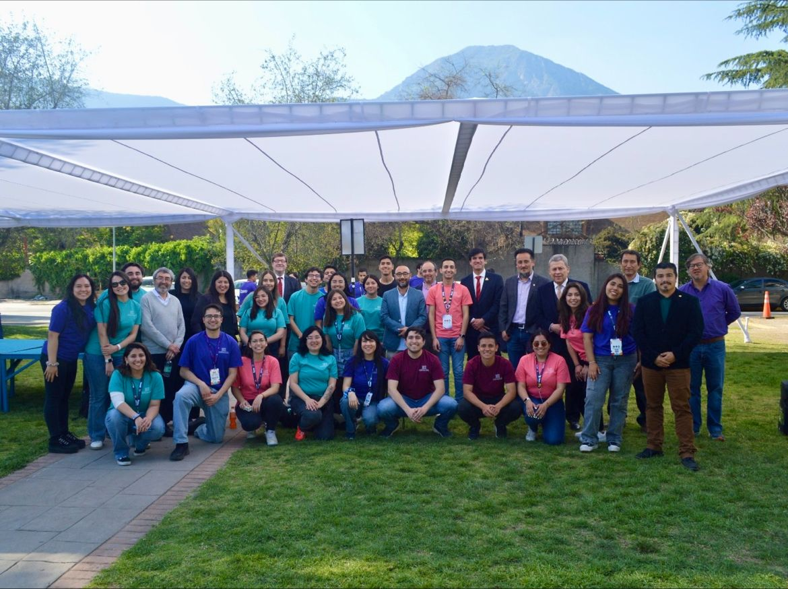
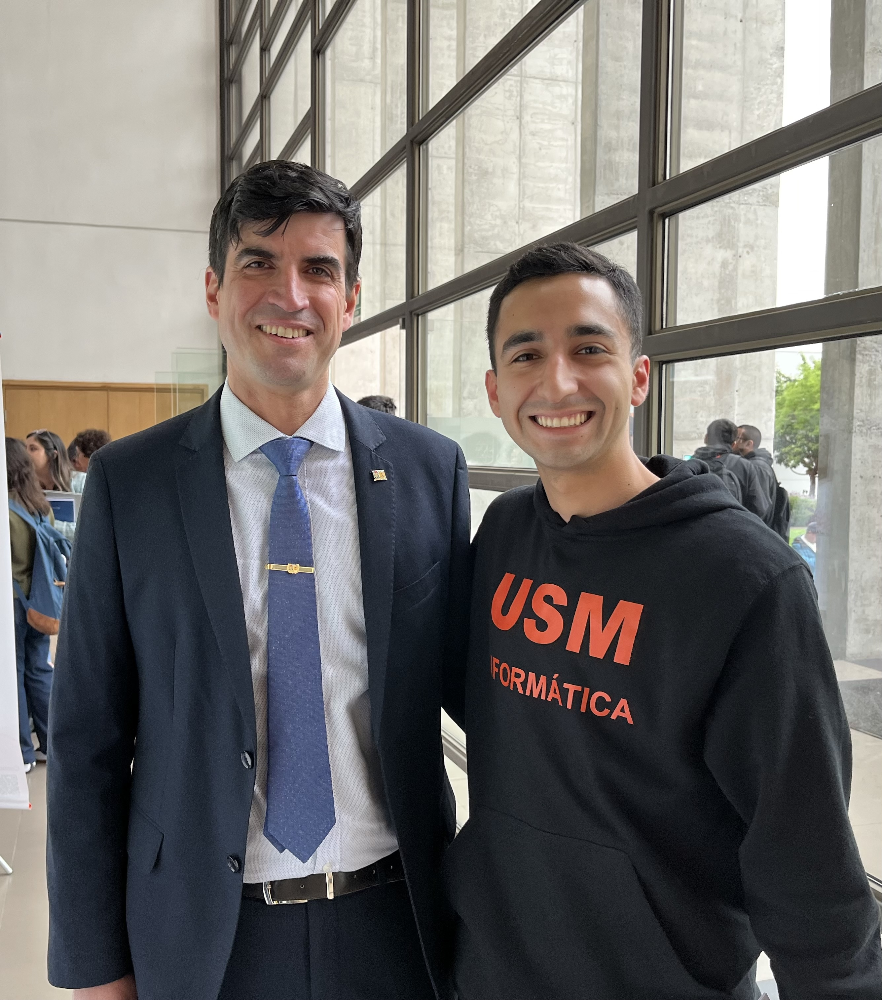

Dos roles. Un mismo patrón: hacer que el sistema funcione.
Entre 2023 y 2025 asumí responsabilidades en dos áreas distintas de USM. En promoción de admisión trabajé sobre adquisición, posicionamiento y seguimiento de postulantes. En paralelo, como Coordinador Asistente, apoyé la operación de un curso universitario de gran escala.
Admisión como sistema de adquisición, no solo difusión.
Lideré iniciativas de captación y outreach para la Escuela de Negocios, combinando marketing, CRM, partnerships y eventos para fortalecer el posicionamiento de los programas y mejorar el engagement de postulantes.
Cerca de estudiantes, equipos y stakeholders.

Operar consistencia a escala.
Como Coordinador Asistente, supervisé la operación de un curso universitario con 12+ secciones y 400+ estudiantes, coordinando docentes y ayudantes para mejorar ejecución, consistencia y resultados.
El trabajo también pasa fuera del escritorio.
Durante mi paso por Admisión participé en actividades, ferias y encuentros junto al equipo, conectando directamente con estudiantes, familias y la comunidad universitaria.

Construyendo desde dentro de la institución.

Más que una operación de Admisión.
Trabajar dentro de la universidad también significó participar de sus hitos, actividades y espacios institucionales, entendiendo de cerca cómo conviven comunidad, experiencia estudiantil y operación.
Una mirada cercana a la institución y su liderazgo.

Conectando ejecución con una mirada más amplia.
Mi experiencia en USM me permitió moverme entre la operación diaria y espacios institucionales, entendiendo cómo distintas áreas y liderazgos se conectan alrededor de una misma experiencia universitaria.
Trabajando directamente con quienes lideraban cada frente.
Mis dos roles en USM me permitieron trabajar de forma directa con liderazgos de admisión y programación, conectando estrategia, coordinación y ejecución en contextos distintos.

Karen Radonich
Trabajé directamente con Karen en estrategia de admisión, iniciativas de captación y ejecución a lo largo del funnel de postulantes.

Javier Robledo
Trabajé directamente con Javier en operación del curso, coordinación, reporting y ejecución entre múltiples secciones.
Construyendo sistemas antes de llamarlos sistemas.
Mirando hacia atrás, USM fue una etapa donde ya aparecían varias ideas que siguen presentes en mi trabajo: usar datos para decidir, diseñar procesos claros, coordinar equipos distintos y convertir operaciones complejas en sistemas más repetibles y escalables.